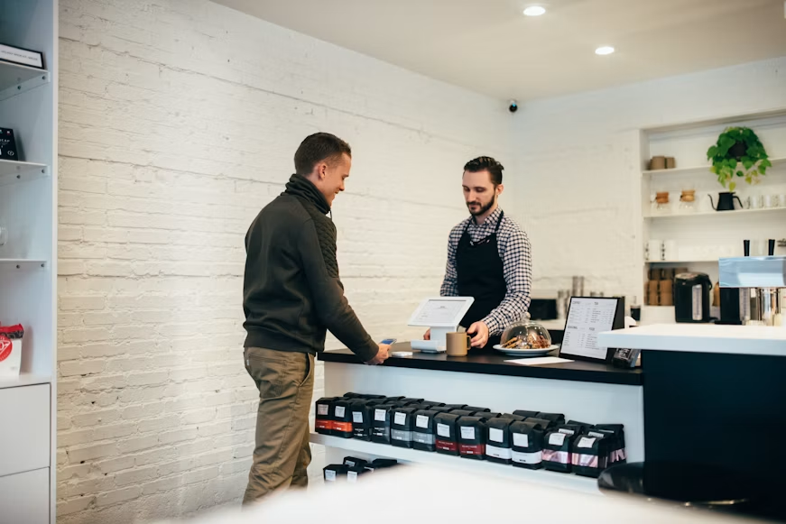

Lokal & Otentik
Semua biji kopi kami dipilih langsung dari petani lokal Pekalongan dan sekitarnya.
Tentang Kami
KOPARA adalah singkatan dari Kopi Para Pelajar — didirikan di Pekalongan, Jawa Tengah, sebagai ruang kopi yang berpihak pada komunitas lokal.
Semua biji kopi kami dipilih langsung dari petani lokal Pekalongan dan sekitarnya.
Harga terjangkau dengan suasana nyaman untuk belajar, mengerjakan tugas, dan berdiskusi.
Kami secara aktif mendukung acara, pameran, dan kegiatan UMKM di Pekalongan.
